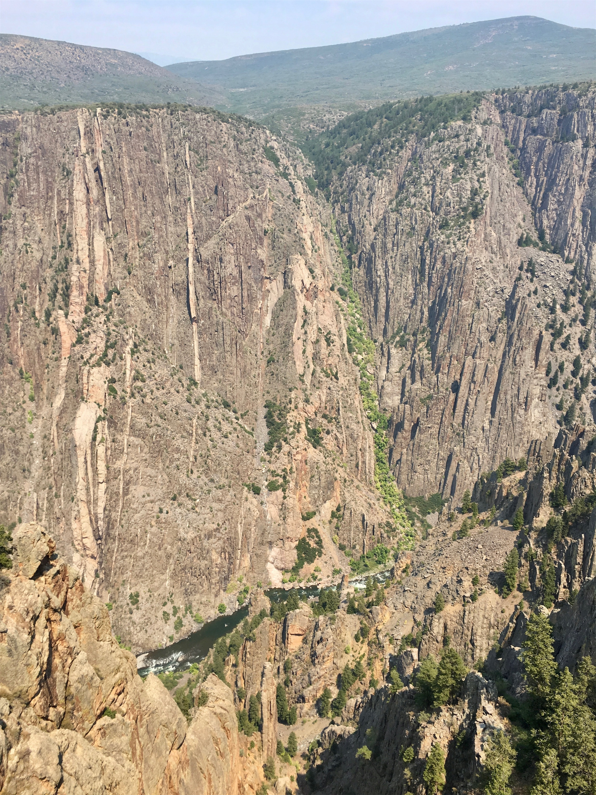
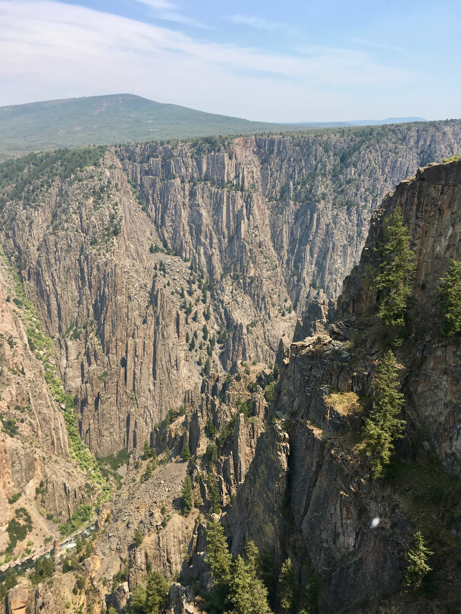
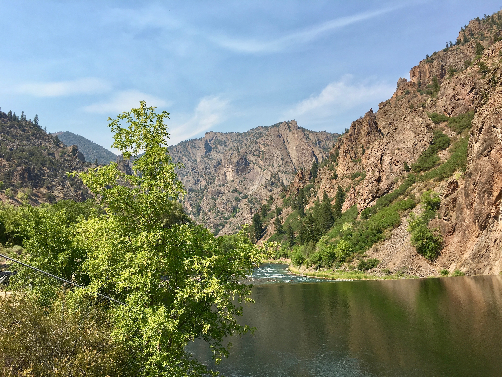
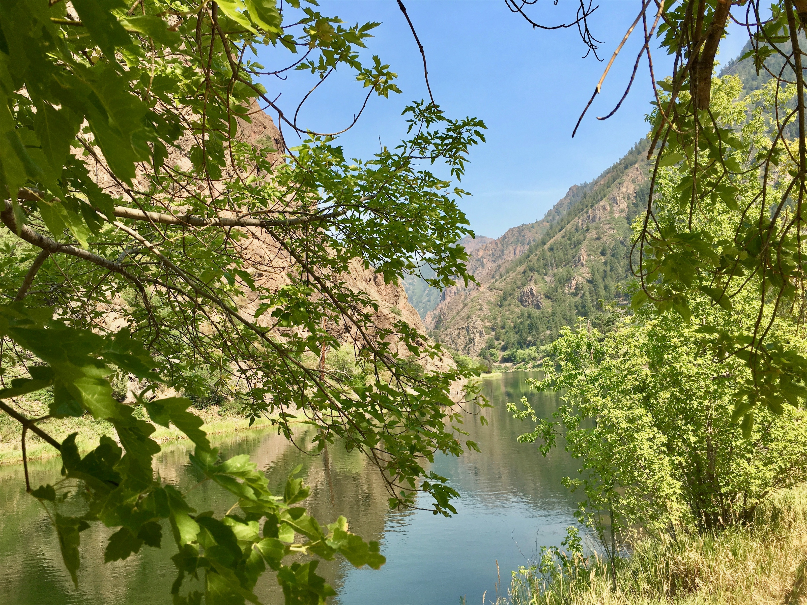

Tuesday, Jul 31, 2018, 2:21 PM MDT
Black Canyon of the Gunnison National Park, Montrose, CO, United States
88°F Sunny
88°F Sunny
![]()
Far View Lodge, CO -> South Rim Visitor Center, CO 175 mi, 5 hr
South Rim Visitor Center, CO -> High Point (RT) 12 mi, 0.75 hr
South Rim Visitor Center, CO -> East Portal (RT) 12 mi, 0.75 hr
Trip Total: 10,097 mi
Headed northeast from Mesa Verde, we drove through classic Colorado winding roads through green, high mountains and broad valleys, passing through several ski areas, like Telluride. We arrived at the south rim of this national park, which gets the award for the longest park name. The name comes from the Gunnison River, and the canyon that it carved from the 8,000 ft plateau down 2,000 ft to the river’s level. It is extremely steep and narrow, going to a width of only 40 ft at one spot. The rock is dark, and since the canyon is so steep and narrow, sunlight doesn’t reach the bottom in some areas until it is directly overhead.
We got our first look at the visitor center, seeing and hearing the river so far below. The haze from the wildfires was in the air, as well as the smell. We then drove the South Rim Road, stopping at several overlooks, and then took the 16% grade East Portal Road down to the river and back to the rim. We saw several dams, as well as the diversion tunnel that provides irrigation to the Uncompahgre Valley. The tunnel, 5.8 miles long, was the longest in the world when it was completed in 1909.





